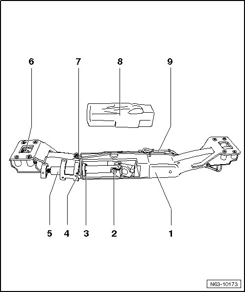

Electrically Swiveling Trailer Hitch Adjusting Motor
Rear Bumper
Electrically Swiveling Trailer Hitch Adjusting Motor
Removing

- Remove bumper cover.
- Remove trailer hitch carrier.
- Cut through the butyl adhesive sealing cord on the cover - 8 -.
- Disconnect the connector - 6 -.
- Remove the bolt - 2 -.
- Remove nuts - 3 - from bolts - 4 - and remove bolts from carrier - 1 -.
- Remove adjusting motor - 5 - from carrier.
Wiring harnesses for socket - 9 - and adjusting motor - 7 - remain on carrier.
Installation
- Slide adjusting motor - 5 - into carrier.
- Place bolts - 4 - in carrier and tighten nuts - 3 - with bolts to 5.5 Nm.
- Coat the bolt - 2 - with locking compound.
- Tighten the screw - 2 -, tightening specification: 55 Nm.
- Connect connector - 6 -.
- Place a butyl adhesive sealing cord on cover - 8 - and press cover firmly onto carrier - 1 -.